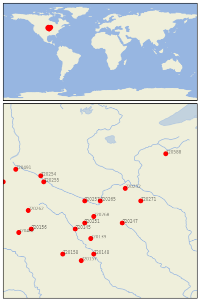
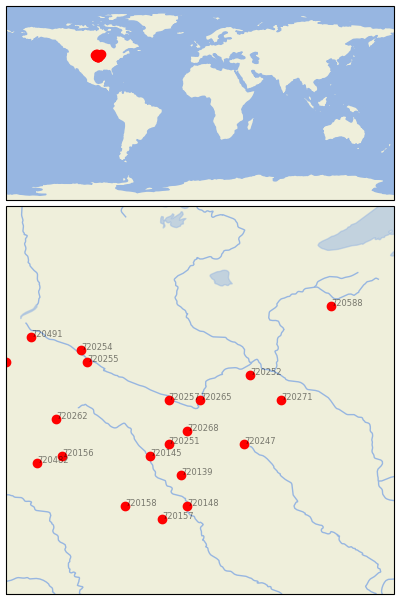

ST PETER [USA]

 
| Neighbour | Name | Country | Distance | Lon/Lat | Years |
|---|
| 720265 | ST PETER | USA | 0 | -94.0, 44.3 | 1877-2019 |
| 720257 | NEW ULM 2 SE | USA | 39 | -94.5, 44.3 | 1864-2019 |
| 720268 | WINNEBAGO | USA | 57 | -94.2, 43.8 | 1893-2019 |
| 720252 | FARMINGTON 3 NW | USA | 77 | -93.2, 44.7 | 1888-2019 |
| 720251 | FAIRMONT | USA | 87 | -94.5, 43.6 | 1887-2019 |
| 720247 | ALBERT LEA 3 SE | USA | 95 | -93.3, 43.6 | 1885-2019 |
| 720271 | ZUMBROTA | USA | 103 | -92.7, 44.3 | 1891-2019 |
| 720145 | ESTHERVILLE 2 N | USA | 118 | -94.8, 43.4 | 1893-2019 |
| 720139 | ALGONA 3 W | USA | 135 | -94.3, 43.1 | 1861-2019 |
| 720255 | MONTEVIDEO 1 SW | USA | 157 | -95.8, 44.9 | 1889-2019 |
| 720254 | MILAN 1 NW | USA | 174 | -95.9, 45.1 | 1893-2019 |
| 720262 | PIPESTONE | USA | 186 | -96.3, 44.0 | 1893-2019 |
| 720148 | FORT DODGE 5NNW | USA | 189 | -94.2, 42.6 | 1851-2019 |
| 720156 | ROCK RAPIDS | USA | 202 | -96.2, 43.4 | 1893-2019 |
| 720158 | STORM LAKE 2 E | USA | 212 | -95.2, 42.6 | 1889-2019 |
| 720157 | ROCKWELL CITY | USA | 216 | -94.6, 42.4 | 1893-2019 |
| 720588 | SPOONER AG RES STN | USA | 234 | -91.9, 45.8 | 1893-2019 |
| 720482 | CANTON | USA | 236 | -96.6, 43.3 | 1893-2019 |
| 720491 | MILBANK 4 NW | USA | 240 | -96.7, 45.3 | 1886-2019 |
| 720495 | WATERTOWN RGNL AP | USA | 254 | -97.1, 44.9 | 1886-2019 |